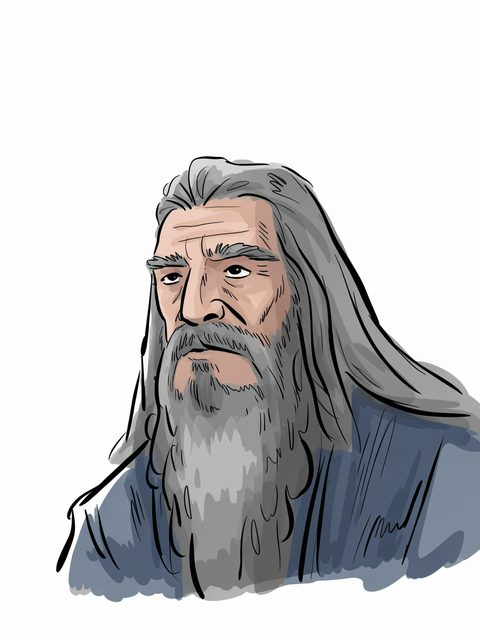

The Arda Archive · Volume III · Records of Persons
The Arda Archive · Manwë Súlimodcccix
◌
Manwë Súlimo
Valar (Aratar)

Valar (Aratar)
Of the house
Valar (Aratar) of Taniquetila
The dates as the archive holds them
before Arda–—b
Style and office
King of Arda; 'dearest to Ilúvatar'c
What the corpus says
“that seemed significant to its author is then worthy of attention in its own right, Manwë or Fëanor no less than”e
“Yet was the greatest and chief of those four great ones Manwë Súlimo; and he dwelt in Valinor and sate in a”f
“(p. 110) Manwë ‘sent forth the race of Eagles, commanding them to dwell in the crags of the”g
“in this matter possessed by Manwë, the ‘Elder King’, to that of lesser spirits”h
“Manwë, or Ulmo, or even from Olwë the king’s brother and his own folk that”i
“implication sent by Manwë, lord of the winds. He comes to Valinor, home”j
“who shall say how, to Manwë Súlimo upon the heights of Taniquetil, the”k
“§36 But Manwë Súlimo, highest and holiest of the Valar, sat upon the”l
a The text — Silm, Valaquenta [C]
b The text — [I-H]
c The archive's reading — [I-H]
d The ruling — the owner's ruling of 13 August 2026, on the 552 generated images: 'we are free to use them'. That settles the LICENCE and does not settle the HAND, which is recorded above as what it is. [C]
e The text — The Book of Lost Tales Part One · l.306[C]
f The text — The Book of Lost Tales Part One · l.2956[C]
g The text — Unfinished Tales of Numenor and Middle Earth · l.1746[C]
h The text — The Letters of J R R Tolkien Revised and Expanded Ed · l.13866[C]
i The text — The War of the Jewels · l.1673[C]
j The text — The Collected Poems of J R R Tolkien · l.39012[C]
k The text — The Book of Lost Tales Part Two · l.3679[C]
l The text — Morgoths Ring · l.833[C]
☞CX·iThe
A triskele boss — the archive's own hand
Volume III · Records of Personsdcccx
◌
The name stands in 1,618 cited lines, in 67 of the corpus's 192 texts — most often in Morgoths Ring (355), The Book of Lost Tales Part One (268), The Silmarillion (153).m
The drafts against the published text
787 cited lines stand in 7 volumes of the drafts and 287 in 10 of the published books — the record thinned as Tolkien revised.n
Two trees and the moons — the archive's own device, not a likeness
“But the highest and holiest of the Valar was Manwe Sulimo, and” — the name is near this line and the archive does not assert that it is this record.q
As the archive holds the line
of Valar (Aratar); in Taniquetil; wedded to Varda Elentári; before Arda–—.r
Named in the same lines
Varda Elentári (161), Melkor (Morgoth) (117), Ulmo (55), Aulë (40) — a shared line is a fact about the line, not a claim that the two met.s
counted from corpus lines that name BOTH records. A shared line is a fact about the line, not a claim that the two met; `eg` names a line a reader can open. [C]
What was looked for and not found
a marginal hand recording a change to this record — searched over 59 verified notes in site/arda_hands.json, and nothing was found.t
What was looked for and not found
recorded by-names for this figure — searched over 47 worked sets in site/arda_epithets.json, and nothing was found.u
m Counted — site/arda_apparatus.json[C]
n Counted — site/arda_apparatus.json[C]
o Counted — site/arda_apparatus.json[C]
p Counted — site/arda_apparatus.json[C]
q The line — The Lost Road and Other Writings · l.6878[C]
Part of the Arda Archive — a corpus-first index of Tolkien's legendarium; claims are cited or marked how far they are inferred, silences are declared, and the colophon prints how many claims carry neither.